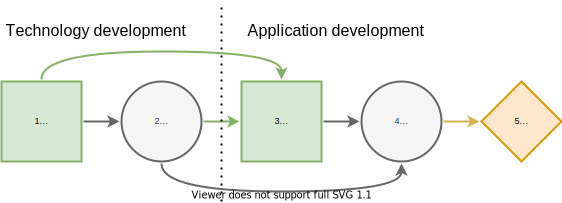

Contingent Portfolio Programming
Warning
This example discusses adding constraints and decision variables to the Decision Programming formulation, as well as custom path utility calculation. Because of this, it is quite advanced compared to the earlier ones.
Description
1, section 4.2:
For instance, assume that the first-stage decisions specify which technology development projects will be started to generate patent-based intellectual property \((P)\) for a platform. This intellectual property contributes subject to some uncertainties to the technical competitiveness \((T)\) of the platform. In the second stage, it is possible to carry out application \((A)\) development projects which, when completed, yield cash flows that depend on the market share of the platform. This market share \((M)\) depends on the competitiveness of the platform and the number of developed applications. The aim is to maximize the cash flows from application projects less the cost of technology and application development projects.
Influence Diagram: Projects
The influence diagram of the contingent portfolio programming (CPP) problem.
There are \(n_T\) technology development projects and \(n_A\) application development projects.
Decision states to develop patents
Chance states of technical competitiveness \(c_j^T \in C_j^T\).
Decision states to develop applications
Chance states of market size \(c_j^M \in C_j^M\).
import DecisionProgramming as dp
import numpy as np
dp.activate()
np.random.seed(42)
diagram = dp.InfluenceDiagram()
DP = dp.DecisionNode("DP", [], ["0-3 patents", "3-6 patents", "6-9 patents"])
diagram.add_node(DP)
CT = dp.ChanceNode("CT", ["DP"], ["low", "medium", "high"])
diagram.add_node(CT)
DA = dp.DecisionNode("DA", ["DP", "CT"], ["0-5 applications", "5-10 applications", "10-15 applications"])
diagram.add_node(DA)
CM = dp.ChanceNode("CM", ["CT", "DA"], ["low", "medium", "high"])
diagram.add_node(CM)
diagram.generate_arcs()
Technical competitiveness probability
Probability of technical competitiveness \(c^T_j\) given the range \(d_i^P:\mathbb P(c_j^T\mid d_i^P) \in [0,1]\). A high number of patents increases probability of high competitiveness and a low number correspondingly increases the probability of low competitiveness.
X_CT = diagram.construct_probability_matrix("CT")
X_CT[0, :] = [1/2, 1/3, 1/6]
X_CT[1, :] = [1/3, 1/3, 1/3]
X_CT[2, :] = [1/6, 1/3, 1/2]
diagram.set_probabilities("CT", X_CT)
Generating the Influence Diagram
We are going to be using a custom objective function, and don’t need the default path utilities for that.
diagram.generate(default_utility=False)
Decision Model: Portfolio Selection
We create the decision variables \(z(s_j\mid s_{I(j)})\) and notice that the activation of paths that are compatible with the decision strategy is handled by the problem specific variables and constraints together with the custom objective function, eliminating the need for separate variables representing path activation.
model = dp.Model()
z = diagram.decision_variables(model)
Creating problem specific variables
In pyDecisionProgramming problems specific constraints
are defined as strings. The syntax is closer to Julia than
Python. First, it is convenient to define the variables
we will need in dp.julia. These will be
available when defining the constraints.
We recommend reading section 4.2. in 1 for motivation and details of the formulation.
Technology project \(t\) costs \(I_t\in \mathbb R^+\) and generates \(O_t\in \mathbb N\) patents.
Application project \(a\) costs \(I_a\in \mathbb R^+\) and generates \(O_a\in \mathbb N\) applications. If completed, provides cash flow \(V(a\mid c_l^M)\in\mathbb R^+\).
n_T = 5 # number of technology projects
n_A = 5 # number of application projects
# Here we set stuff in Julia name space directly
I_t = np.random.random(n_T)*0.1 # costs of technology projects
O_t = np.random.randint(1, 4, n_T) # number of patents for each tech project
I_a = np.random.random(n_T)*2 # costs of application projects
O_a = np.random.randint(2, 5, n_T) # number of applications for each appl. project
# Set the names in dp.julia to use them when setting constraints
dp.julia.I_t = I_t
dp.julia.O_t = O_t
dp.julia.I_a = I_a
dp.julia.O_a = O_a
V_A = np.random.random((n_CM, n_A)) + 0.5 # Value of an application
V_A[0, :] += -0.5 # Low market share: less value
V_A[2, :] += 0.5 # High market share: more value
dp.julia.V_A = V_A
Decision variables \(x^T(t)\in \{ 0,1 \}\) indicate which technologies are selected.
Decision variables \(x^A(a\mid d_i^P, c_j^T)\in \{0,1\}\) indicate which applications are selected.
x_T = dp.JuMP.Array(model, [n_DP, n_T], binary=True)
x_A = dp.JuMP.Array(model, [n_DP, n_CT, n_DA, n_A], binary=True)
dp.julia.x_T = x_T
dp.julia.x_A = x_A
Number of patents \(x^T(t)=\sum_ix_i^T(t)z(d_i^P)\).
Number of applications \(x^A(a\mid d_i^P,x_j^T)=\sum_kx_k^A(a\mid d_i^P,c_j^T)z(d_k^A\mid d_i^P,x_j^T)\).
Helpful variables:
Large constant \(M\) (e.g. \(\frac 32 \max\{\sum_tO_t,\sum_aO_a\}\)).
Small constant \(\epsilon = \frac 12 \min\{O_t,O_a\}\).
dp.julia.M = 20 # a large constant
dp.julia.eps = 0.5*np.min([O_t, O_a]) # a helper variable, allows using ≤ instead of < in constraints (28b) and (29b)
Limits \(q_i^P\) and \(q_k^A\) of the intervals
dp.julia.q_P = [0, 3, 6, 9] # limits of the technology intervals
dp.julia.q_A = [0, 5, 10, 15] # limits of the application intervals
Shorthand for the decision variables \(z\)
dp.julia.z_dP = z.z[0]
dp.julia.z_dA = z.z[1]
The diagram itself
dp.julia.diagram = diagram
Creating problem specific constraints
model.constraint(
f"[i=1:{n_DP}]",
f"sum(x_T[i,t] for t in 1:{n_T}) <= z_dP[i]*{n_T}"
)
model.constraint(
f"[i=1:{n_DP}, j=1:{n_CT}, k=1:{n_DA}]",
f"sum(x_A[i,j,k,a] for a in 1:{n_A}) <= z_dP[i]*{n_A}"
)
model.constraint(
f"[i=1:{n_DP}, j=1:{n_CT}, k=1:{n_DA}]",
f"sum(x_A[i,j,k,a] for a in 1:{n_A}) <= z_dA[i,j,k]*{n_A}"
)
model.constraint(
f"[i=1:{n_DP}]",
f"q_P[i] - (1 - z_dP[i])*M <= sum(x_T[i,t]*O_t[t] for t in 1:{n_T})"
)
model.constraint(
f"[i=1:{n_DP}]",
f"sum(x_T[i,t]*O_t[t] for t in 1:{n_T}) <= q_P[i+1] + (1 - z_dP[i])*M - eps"
)
model.constraint(
f"[i=1:{n_DP}, j=1:{n_CT}, k=1:{n_DA}]",
f"q_A[k] - (1 - z_dA[i,j,k])*M <= sum(x_A[i,j,k,a]*O_a[a] for a in 1:{n_A})"
)
model.constraint(
f"[i=1:{n_DP}, j=1:{n_CT}, k=1:{n_DA}]",
f"sum(x_A[i,j,k,a]*O_a[a] for a in 1:{n_A}) <= q_A[k+1] + (1 - z_dA[i,j,k])*M - eps"
)
We can also model dependencies between the technology and application projects, e.g. application project \(a\) can be completed only if technology project \(t\) has been completed. This is done by adding constraints
As an example, we state that application projects 1 and 2 require technology project 1, and application project 2 also requires technology project 2.
model.constraint(
f"[i=1:{n_DP}, j=1:{n_CT}, k=1:{n_DA}]",
f"x_A[i,j,k,1] <= x_T[i,1]"
)
model.constraint(
f"[i=1:{n_DP}, j=1:{n_CT}, k=1:{n_DA}]",
f"x_A[i,j,k,2] <= x_T[i,1]"
)
model.constraint(
f"[i=1:{n_DP}, j=1:{n_CT}, k=1:{n_DA}]",
f"x_A[i,j,k,2] <= x_T[i,2]"
)
Objective function
The path utility can be calculated as \(\mathcal U(s) \sum_a x_k^A(a\mid d_i^P,c_j^T)(V(a\mid c_l^M)-I_a) - \sum_tx_i^T(t)I_t\)
However, using the expected value objective would lead to a quadratic objective function as the path utility formulation now contains decision variables. In order to keep the problem completely linear, we can use the objective formulation presented in 1:
dp.julia.patent_investment_cost = dp.JuMP.Expression(
model,
f"[i=1:{n_DP}]",
f"sum(x_T[i, t] * I_t[t] for t in 1:{n_T})"
)
dp.julia.application_investment_cost = dp.JuMP.Expression(
model,
f"[i=1:{n_DP}, j=1:{n_CT}, k=1:{n_DA}]",
f"sum(x_A[i, j, k, a] * I_a[a] for a in 1:{n_A})"
)
dp.julia.application_value = dp.JuMP.Expression(
model,
f"[i=1:{n_DP}, j=1:{n_CT}, k=1:{n_DA}, l=1:{n_CM}]",
f"sum(x_A[i, j, k, a] * V_A[l, a] for a in 1:{n_A})"
)
model.objective(
f"sum( sum( diagram.P(convert.(State, (i,j,k,l))) * (application_value[i,j,k,l] - application_investment_cost[i,j,k]) for j in 1:{n_CT}, k in 1:{n_DA}, l in 1:{n_CM} ) - patent_investment_cost[i] for i in 1:{n_DP} )"
)
Solving the Model
model.setup_Gurobi_optimizer(
("IntFeasTol", 1e-9),
("LazyConstraints", 1)
)
model.optimize()
Analyzing results
The optimal decision strategy and the utility distribution are printed. The strategy is to make 6-9 patents (state 3 in node 1) and 10-15 applications. The expected utility for this strategy is 1.71.
Z = z.decision_strategy()
S_probabilities = diagram.state_probabilities(Z)
In [1]: S_probabilities.print_decision_strategy()
Out[1]:
┌────────────────┐
│ Decision in DP │
├────────────────┤
│ 6-9 patents │
└────────────────┘
┌─────────────────────┬────────────────────┐
│ State(s) of DP, CT │ Decision in DA │
├─────────────────────┼────────────────────┤
│ 6-9 patents, low │ 10-15 applications │
│ 6-9 patents, medium │ 10-15 applications │
│ 6-9 patents, high │ 10-15 applications │
└─────────────────────┴────────────────────┘
We use a custom path utility function to obtain the utility distribution.
# Note that indexing in Julia starts from 1, so we
# must add 1 to each index
dp.julia.DP_i = diagram.index_of("DP") + 1
dp.julia.CT_i = diagram.index_of("CT") + 1
dp.julia.DA_i = diagram.index_of("DA") + 1
dp.julia.CM_i = diagram.index_of("CM") + 1
path_utilities = dp.Diagram.ExpressionPathUtilities(
model, diagram,
f'''sum(x_A[s[index_of(diagram, "DP")], s[index_of(diagram, "CT")], s[index_of(diagram, "DA")], a] * (V_A[s[index_of(diagram, "CM")], a] - I_a[a]) for a in 1:{n_A}) -
sum(x_T[s[index_of(diagram, "DP")], t] * I_t[t] for t in 1:{n_T})
''',
path_name = "s"
)
diagram.set_path_utilities(path_utilities)
U_distribution = diagram.utility_distribution(Z)
In [2]: U_distribution.print_distribution()
Out[2]:
┌───────────┬─────────────┐
│ Utility │ Probability │
│ Float64 │ Float64 │
├───────────┼─────────────┤
│ -1.243076 │ 0.152778 │
│ 0.605287 │ 0.291667 │
│ 3.110470 │ 0.555556 │
└───────────┴─────────────┘
In [3]: U_distribution.print_statistics()
Out[3]:
┌──────────┬────────────┐
│ Name │ Statistics │
│ String │ Float64 │
├──────────┼────────────┤
│ Mean │ 1.714666 │
│ Std │ 1.666694 │
│ Skewness │ -0.613535 │
│ Kurtosis │ -1.154244 │
└──────────┴────────────┘
References
- 1(1,2,3)
Salo, A., Andelmin, J., & Oliveira, F. (2019). Decision Programming for Multi-Stage Optimization under Uncertainty, 1–35. Retrieved from http://arxiv.org/abs/1910.09196